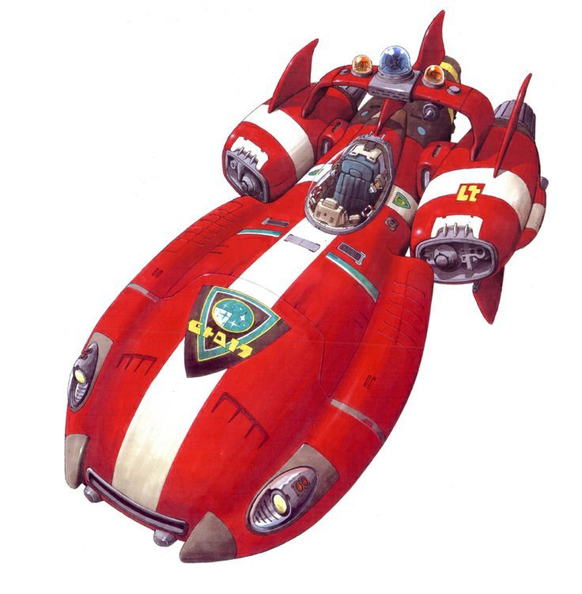

Qui aurait cru qu'un jour je retournerais dans l'espace, non pas comme fugitif, mais comme héros ? Cette fois-ci, c'était pour une mission très spéciale ! 🌟
Préparation au Décollage
Jumba a préparé son ancien vaisseau spatial spécialement pour moi. Cette fois, pas question de le voler comme à mon arrivée sur Terre ! 😅 Lilo m'a préparé un kit de survie très spécial :
- 🎸 Un ukulélé pour ne pas oublier Hawaï
- 🍕 Des sandwichs au beurre de cacahuète (mes préférés !)
- 📸 Un appareil photo pour immortaliser mes aventures
- 🧸 Une photo de toute l'ohana
La Mission
Ma mission ? Aider d'autres expériences comme moi à trouver leur place dans l'univers. Grâce à ce que j'ai appris sur Terre avec Lilo et ma famille, je suis devenu un expert en "transformation de méchant en gentil" ! 🦸♂️
Le saviez-vous ? 🌠
Il existe plus de 625 expériences créées par Jumba, toutes avec des pouvoirs uniques !
Rencontres Spatiales
Dans l'espace, j'ai rencontré des créatures incroyables. Certaines ressemblaient à des peluches, d'autres à des monstres, mais toutes avaient besoin d'une chose : comprendre ce qu'est l'ohana.
"Même dans l'espace infini, rien n'est plus grand que l'amour d'une famille."
Retour sur Terre
Après cette incroyable aventure, revenir à la maison n'a jamais été aussi doux. Lilo m'attendait avec un nouveau collier spatial et plein de questions sur mes aventures. Et vous savez quoi ? Notre ohana s'est même agrandie avec quelques nouvelles expériences qui ont décidé de vivre sur Terre ! 🌍